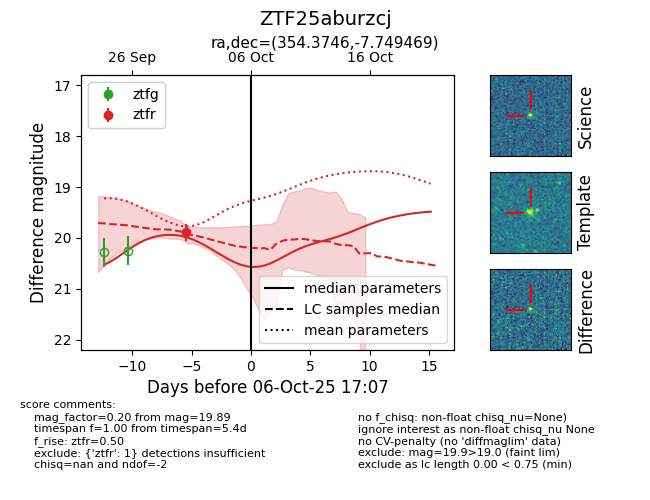
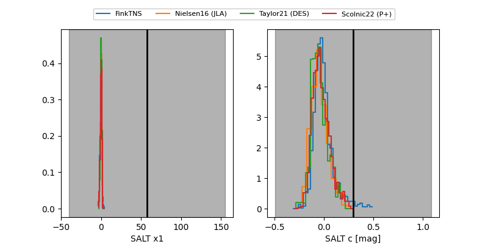

FINK: ZTF25aburzcj
Lasair: ZTF25aburzcj
ALeRCE: ZTF25aburzcj
ZTF25aburzcj (ztf,fink)
equatorial (ra, dec) = (354.3746,-7.74947)
galactic (l, b) = (77.4114,-63.87666)


last ztfr=19.89
1 ztfr detections